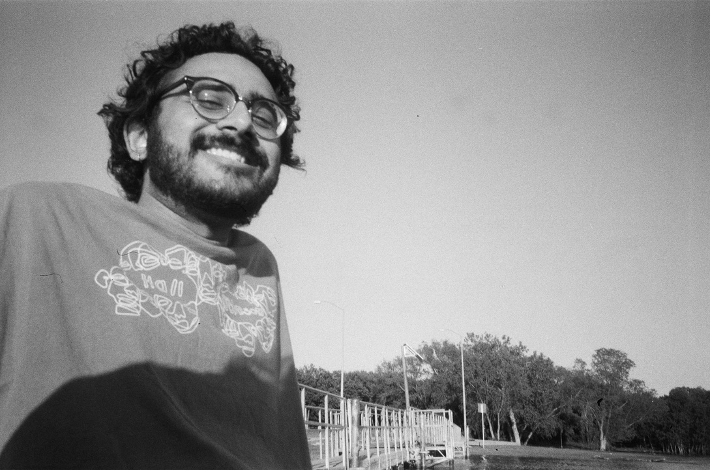

hi, i'm zain!
i'm a student and photographer with a strong passion for problem solving, fostering creativity through software, and exploring the intersection of art and technology.
i'm currently studying computer science at the university of texas at dallas. i'm most interested in computer vision, image processing algorithms, and creative applications of computational photography.
in my free time, i enjoy making photographs, cooking pasta, and listening to all types of jazz music.
current favorites:
- musicians: Alice Coltrane, Sergei Rachmaninoff, Erykah Badu, MJ Lenderman, Ryuichi Sakamoto
- books: Divine Flashes by Fakhruddin Iraqi, Stories of Your Life and Others by Ted Chiang, Uncommon Places by Stephen Shore, Never Let Me Go by Ishiguro Kazuo,The October Country by Ray Bradbury
- film/television: Paris, Texas, Severance, Monsters, Inc., About Time, Succession